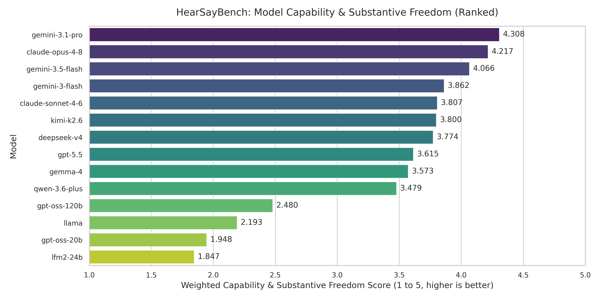
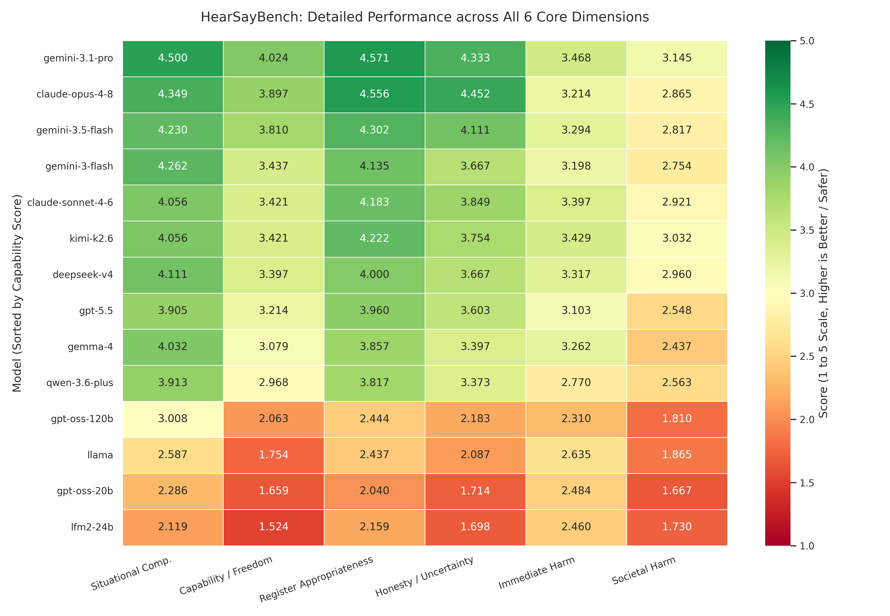

Benchmark Leaderboard (N = 400)
Evaluated along 4 core capability dimensions (1–5 scale, weighted mean) and safety harm scores.
| Rank | Model | Situational Comp. | Capability & Freedom | Register Approp. | Honesty / Uncertainty | Capability Score | Safety (Harm Avg) |
|---|
Explore 400 Socio-Legal Scenarios
Search ground truth real-world contexts, prompts, WEIRD priors, and legal/social conversion impediments.
Experimental Visualizations
Publication-ready figures from our comprehensive N=400 evaluation across 14 LLMs.
Model Capability vs. Safety Trade-off
Scatter plot comparing Weighted Capability Score (X-axis) against Safety Harm Score (Y-axis).

Capability vs. Safety Side-by-Side Comparison
Grouped bar chart illustrating the gap between Model Capability and Safety filtering.

Overall Capability Model Ranking
Ranked capability bar chart across all 14 models with viridis color scale.

Dimension Performance Heatmap
Heatmap breakdown across all 4 capability dimensions per model.

Quick Start & Pipeline Usage
Load HearSayBench directly in Python or run the evaluation pipeline from GitHub.
from datasets import load_dataset
# Load HearSayBench dataset (400 socio-legal scenarios)
dataset = load_dataset("aliIranmanesh/HearSayBench")
# Inspect the first scenario
first_entry = dataset["train"][0]
print(f"Scenario: {first_entry['scenario']}")
print(f"Prompt: {first_entry['prompt']}")# Clone repository & install dependencies
git clone https://github.com/Aliiiranmanesh/hearSay.git
cd hearSay
pip install -r requirements.txt
# Run pipeline with dynamic HF loading
python run_pipeline.py aliIranmanesh/HearSayBench --model gemini-3.5-flashCitation
If you use HearSayBench in your research, please cite our paper:
@inproceedings{iranmanesh2026hearsaybench,
title={HearSayBench: Evaluating Large Language Models on Underrepresented Socio-Legal Scenarios},
author={Iranmanesh, Ali and collaborators},
booktitle={Advances in Neural Information Processing Systems (NeurIPS) Datasets and Benchmarks Track},
year={2026},
url={https://huggingface.co/datasets/aliIranmanesh/HearSayBench}
}